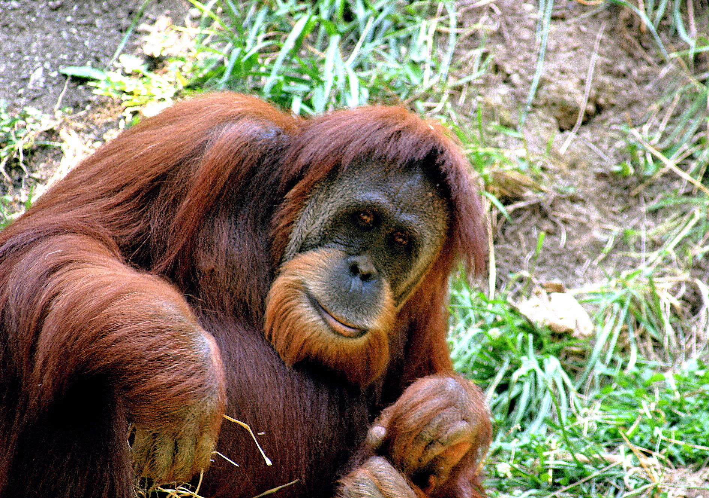

Ponginae
Klik hier voor meer informatie over de Ponginae
Ponginae zijn een onderfamilie van de familie mensachtigen (Hominidae)
die het levende geslacht orang-oetans bevat, en daarnaast de uitgestorven geslachten:
Ankarapithecus, Gigantopithecus, Khoratpithecus, Lufengpithecus en Sivapithecus.
Beschrijving

De Borneose orang-oetan heeft een donkere oranjerode
vacht. Hij heeft zeer lange armen en sterke grijphanden
en -voeten, een aanpassing aan het leven in bomen.
De Borneose orang-oetan wordt 90 tot 100 centimeter lang
en 40 tot 80 kilogram zwaar. Mannetjes worden veel groter
dan vrouwtjes. Een mannetje had een lengte van 180
centimeter. Ook hebben mannetjes opvallende grote
wangkwabben, een keelzak en een korte, oranje tot rode
baard, die bij de vrouwtjes ontbreken. De kwabben zijn kaal
en bol, in tegenstelling tot die van de Sumatraanse soort,
waarbij de kwabben behaard zijn en langs het gezicht lopen.
Leefwijze
De orang-oetan brengt het grootste deel van zijn leven door in bomen. Volwassen mannetjes
komen regelmatig (zo'n vijf procent van zijn leven) op de grond, waarschijnlijk omdat er op
Borneo geen tijgers en panters, de belangrijkste vijanden voor orang-oetans, voorkomen.
Bij ondersoort Pongo pygmaeus morio lijken zowel vrouwtjes als mannetjes, van elke leeftijd,
regelmatig op de grond te komen om zich er te verplaatsen. 's Nachts slaapt de orang-oetan
in een nest, hoog in de bomen, die hij zelf heeft gemaakt door takken te vlechten.
Overdag besteedt de orang-oetan het grootste deel van de tijd aan het zoeken naar vlezige
vruchten als vijgen, nangka's en doerians. Omdat de planten verspreid over het bos staan
en ieder hun eigen bloeitijd hebben, en daardoor slechts enkele weken per jaar voedzame
producten leveren, moet de orang-oetan een goed geheugen hebben om te weten wanneer en
waar voedsel te vinden is. Behalve vruchten eet de orang-oetan ook ander plantaardige kost
als boomschors, bladeren (bijvoorbeeld van Pandanus), scheuten, lianen en het merg in
takken en stengels. Een enkele keer eet hij ook ander materiaal, als eieren, honing,
termieten en andere insecten en kleine gewervelde dieren, waaronder hagedissen,
jonge vogeltjes en zelfs plompe lori's, kleine halfaapjes. Daarnaast staat ook vis op
zijn menu. Ze eten aangespoelde vissen of jagen de vissen op met stokken zodat die uit
het water springen en gevangen kunnen worden. De orang-oetan kan niet zwemmen.
Over het algemeen mijdt hij water, maar sommige groepen waden toch actief door het water.